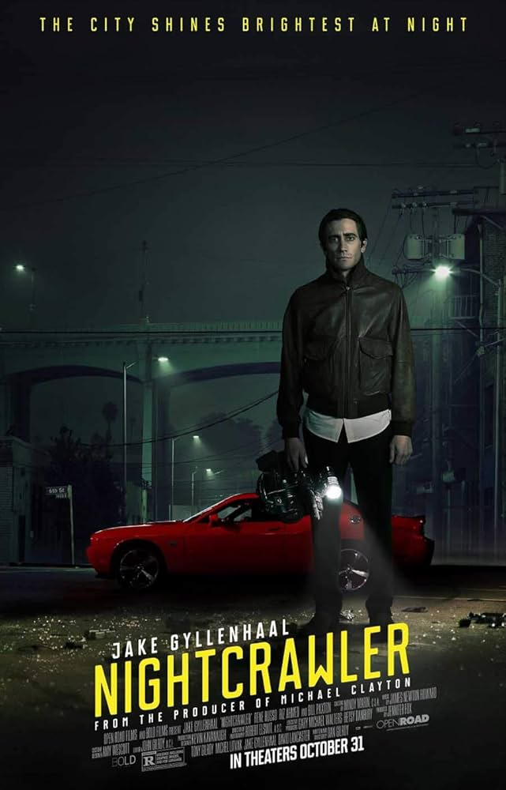

Back to Timeline
Nightcrawler (2014)
About the Film
Nightcrawler is a darkly comedic crime thriller directed by Dan Gilroy that captures the fictional rise of Louis Bloom, a sociopathic criminal turned video journalist who goes to morally questionable lengths to climb up the ladder and deliver graphic videos to a struggling news company. The film portrays the modern journalist as a parasite who sensationalizes violence for monetary gain.
Historical Context
Nightcrawler is influenced by the history of photojournalism and its exploitation of crime for viewership. Lou Bloom, the protagonist’s, character is inspired by the photographer Weegee of the 1930’s 40’s. Weegee, Arthur Fellig, specialized in taking graphic photography of New York City crime scenes. Fellig, similar to Bloom, was a freelance photographer who was known for being able to arrive at crime scenes shortly after they occurred. Wegee gained controversy for consistently seeking out tragedy to portray graphic events similar to the controversy Bloom brings to the newsroom with his graphic videography.
Nightcrawler displays this intrusive style of journalism amidst the contemporary of the 2010s. The film comments on modern media’s drive to sensationalize fear for ratings through Bloom’s depiction as a modern, fictionalized Weegee influenced by this new landscape of journalism. Bloom’s character is also a satire of the rise and grind mindset of the time. Heavily influenced by online business culture, he goes to extraordinary lengths to advance through society without minding ethical guidelines. This mindset manifests itself in Bloom's sociopathic nature where all of his relationships become business transactions. He crosses personal boundaries with everyone he interacts with seeing them as tools to get what he wants rather than fellow human beings.
Contrasting Films: Spotlight and All the President's Men
It’s very telling to compare and contrast this film with its close contemporary, Spotlight, and one of Spotlight’s clearest sources of inspiration, All the President’s Men. The real journalists, as they’re portrayed in those two films, embody the classic Hollywood journalist character archetype. Lou Bloom, however, fits into a different category. Out of all the films on this list, Nightcrawler takes the closest look at journalism as a business and an industry; so Lou, in stark contrast with the honestly motivated characters of some of the other films, is a clear satire of the rise and grind mindset that was gaining popularity among men at the time and has been ever since.
Journalistic Themes
- Struggles of unemployment and the consequences of capitalism on the working class.
- Use of Antihero conventions:
- Protagonist advances up the ladder despite adverse circumstances.
- Does so through intrusive journalistic means and breaks the law.
- Motivated by greed:
- Exploitation of Rick who is desperate for a job and is forced to work under uncomfortable conditions.
- Rick takes the position after seeing a job posting not knowing what the job entails and quickly learns that he is in for more than he bargained for working under Lou.
- How capitalism encourages competition within the media:
- Competition between Bloom and Joe Loder who is a rival photojournalist.
- Media Practice and Consumer Culture - News stations and their demand to show footage that will incite fear in their audience.
- The demands that the news director of KWLA 6, Nina Romina, places on Lou to get footage that will make headlines, “if it bleeds, it leads.”
- Footage often focussed on crime in suburban neighborhoods due to consumer demand.
- Parts of the story are chosen to be left out by the newsroom based on how much it ‘adds to the story.’ Their narrative of crime leaking into the suburbs and Nina’s insistence on not mentioning it was a drug related crime to incite more fear into her audience.
Related Film: His Girl Friday
- Both Lou and Hildy disobey the law in order to get the opportunity to convey their story.
- In His Girl Friday, Hildy, a journalist, hides a criminal in order to uphold the notion that the killer was not guilty they hid him from the police to avoid the death penalty.
- Lou Bloom withholds information from the police of the criminal’s identity so that he can get another shot of the criminals.
Contrasting Film: Lee
- Lee Miller is a photojournalist who is deemed as heroic after capturing the events of WWII.
- Meant to honour the tragedy of events rather than sensationalize them.
- In Nightcrawler, Lou seeks the thrill of capturing graphic and tragic events.
- Lou doesn’t respect or honor those he videos, rather he sees them as a means to make profit and advance up the ladder.